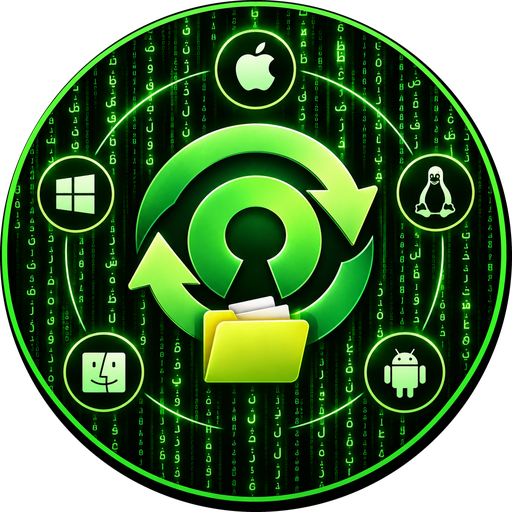

AndroSync
Keeps folders you choose identical between your devices (currently Linux and Android), in either direction, over the USB cable or over the internet via Tailscale. Start a sync from the phone app, the desktop window, or the command line. Nothing is uploaded to any cloud – the computer and the phone talk to each other directly.
Why AndroSync
Preview first
See every copy and delete before anything happens. A first sync never deletes.
Undo a whole sync
Put both sides back the way they were before the last run, from the phone or the computer.
Stop any time
A live log and a Stop button on the phone, the desktop window and the command line.
No duplicate files
When both sides changed, the losing version is kept in a hidden folder, not as extra files.
USB or Tailscale
Over the cable with USB debugging, or without debugging through the app's agent mode.
Free and private
GPL-3.0-or-later. No ads, no accounts, no tracking. Your files never leave your own devices.
Install in four steps
- On a Linux computer (laptop, desktop PC or server):
sudo apt install pipx adb python3-tk, thenpipx ensurepathand open a new terminal. - Download the wheel from the latest release and run
pipx install ./androsync-*.whl. - Run
androsync service install, thenandrosync service install-launcherand open AndroSync from your app grid. - Install the Android app from the same release, run
androsync qron the computer and scan the code with the phone.
Other Linux systems, a server without a screen, and the details: install guide.